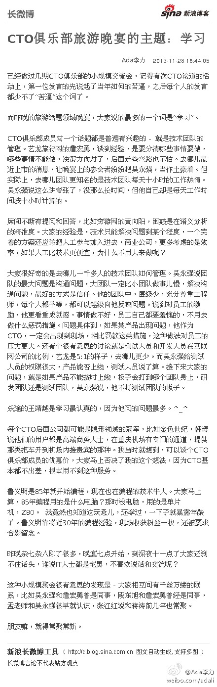

CTO俱乐部旅游晚宴的主题：学习： 已经做过几期CTO俱乐部的小规模交流会，记得有次CTO论道的活动上，第一位发言的先说起了当年如何的苦逼，之后每个人的发言都少不了“苦逼”这个词了。 而昨晚...文字版>> 网页链接 （新浪长微博>> 网页链接） 
成为极客头条的主编，使用 @极客头条 这个方式，就可以把不错的文章标题和链接，自动发布到CSDN的极客头条首页， 网页链接 获顶多的文章链接，可上CSDN首页。@Ada李力:@极客头条 敏捷的商业价值是什么，与传统对比的特点是什么？ - 倚天屠龙记 - 博客频道 - CSDN.NET @ITer谢明志 网页链接
#社区运营#新浪网作为国内最早最大的门户网站，有很多国内最早的垂直领域社区，如汽车论坛，房产论坛，母婴论坛，但最后都是别人把这些垂直领域社区做大做强，以至于做上市了。- 这大概是基因的缘故，媒体属性太强的公司，做不好社区，因为业务模式决定了不会太在乎用户的体验和感受。
从资源上看，都投入到了高端人士层，而忽视草根；从商务上看，太在乎给钱的客户，而忽视使用网站的真正用户。//@程鸿: 太在乎意见领袖的感受@Ada李力:#社区运营#新浪网作为国内最早最大的门户网站，有很多国内最早的垂直领域社区，如汽车论坛，房产论坛，母婴论坛，但最后都是别人把这些垂直领域社区做大做强，以至于做上市了。- 这大概是基因的缘故，媒体属性太强的公司，做不好社区，因为业务模式决定了不会太在乎用户的体验和感受。
#社区运营#互联网中对用户的理解应该是这样: TA是这个世界的King or Queen。- 所以，以用户为中心的产品设计是，各种服务，TA可以随用随取。- 我目前特别想有的服务，就是我在CSDN上的各种发帖和互动，能集中展现出来，也能自动推送到其它社交媒体网站上。
#社区运营#越大的社区越需要分层，分级和分圈子。分级不是歧视，比如会员吐槽的资源太倾向高端人士，而是你混哪个圈子，自己收获和圈子里其它人的收获，综合起来，价值要最大化。没毕业的学生要混CTO圈子，那是肯定不行的。－ 运营人员需要把握的是，入圈子规则要清晰易理解和公开透明。
#社区运营#之前常讲社区里鼓励人人平等的理念，然后又讲社区要分层分级分圈子，其实不矛盾，这个话题扯多了一直在争吵的公平与公正问题。－ 我的理解是，社区会员起点相同，这个时候人人平等。但之后，对社区贡献高的人确实获得了一些特权，不同于普通用户。社区就是个小社会哪。[呵呵]
//@郑几块：这个你有点跑偏了，不管是什么平台，重要的是人，有人才有内容，有人才有价值。社区或者社交产品，前期需要的是推广，有人之后，才能说后面的东西。总的来说，现在即便是微信、微博，也是有了口碑，才具有价值的。@Ada李力:#社区运营#垂直社区和更大的社交媒体平台（如微信，微博）的关系是怎样呢？－从垂直社区角度来看，就是输出内容，换回流量。
垂直社区黏住自己的用户群最重要。//@D同学_1Cross医学社区: 历史：垂直社区LinkedIn早于twitter面试并更早形成口碑，而国内在微博之前的各类垂直社区几乎集中在一段时间内上线而形成了混战，当然也包括很早起步的天*网不给力。个人觉得粘住自己的用户群还是最重要，流量跟着强者走@Ada李力:#社区运营#垂直社区和更大的社交媒体平台（如微信，微博）的关系是怎样呢？－从垂直社区角度来看，就是输出内容，换回流量。


 //@D同学_1Cross医学社区: 历史：垂直社区LinkedIn早于twitter面试并更早形成口碑，而国内在微博之前的各类垂直社区几乎集中在一段时间内上线而形成了混战，当然也包括很早起步的天*网不给力。个人觉得粘住自己的用户群还是最重要，流量跟着强者走
//@D同学_1Cross医学社区: 历史：垂直社区LinkedIn早于twitter面试并更早形成口碑，而国内在微博之前的各类垂直社区几乎集中在一段时间内上线而形成了混战，当然也包括很早起步的天*网不给力。个人觉得粘住自己的用户群还是最重要，流量跟着强者走